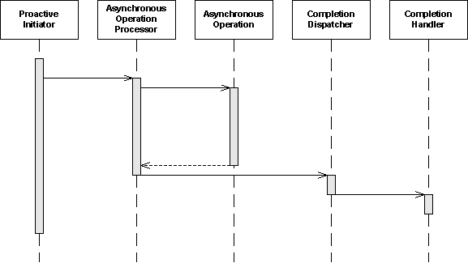
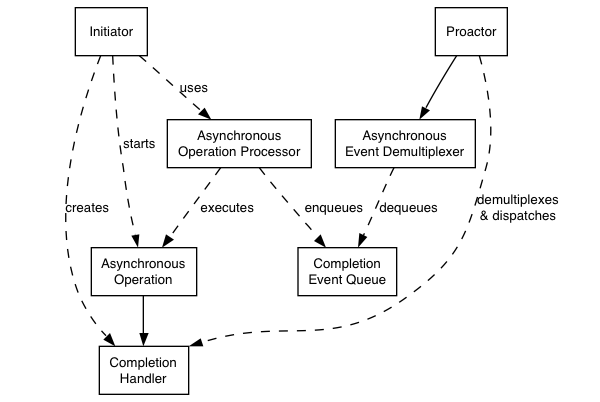

Boost asio module
Abstract |
Boost asio module |
Authors |
Walter Fan |
Status |
draft |
Updated |
2026-02-05 |
概述
Boost asio 基于 proactor 模式，封装了系统底层的 select/poll/epoll/kqueue 等多路复用方式，提供了一个强大的异步编程框架。
Reactor 称为为反应器模式, 实现了同步I/O 的多路分发
Proactor 称为前驱器模式, 实现了异步I/O 的多路分发

大致步骤是
发起者 Initiator 定义异步操作处理器，及其对应的异步操作
异步操作完成后告之异步操作处理器 Asynchronous Operation Processor
异步操作处理器报告给任务完成调度员 Asynchronous Event Demultiplexer
任务完成调度员再分派给任务完成处理器 Completion Handler

相关组件有:
Asynchronous Operation 异步操作
定义一个可以异步执行的操作，例如在一个 socket 上异步读写
Asynchronous Operation Processor 异步操作处理器
执行异步操作，并在操作完成后将完成事件发送到一个完成事件队列中。
从更高层次看来，内部的服务，如 reactive_socket_service 就是异步操作处理器
Completion Event Queue 完成事件队列
用一个队列来缓存完成的事件，直到它们被一个异步事件分解器从队列中取出
Completion Handler 完成处理器
处理一个异步操作完成的结果，它们一般是用 boost::bind 创建的函数对象
Asynchronous Event Demultiplexer 异步事件分解器
在完成事件队列 (Completion Event Queue) 上阻塞等待事件的发生，并返回完成事件给其调用者
Proactor 前驱器
Calls the asynchronous event demultiplexer to dequeue events, and dispatches the completion handler (i.e. invokes the function object) associated with the event. This abstraction is represented by the io_context class
调用异步事件分解器 (asynchronous event demultiplexer) 从完成事件队列中取出事件，并分派给完成事件处理器 (completion handler) - 如调用事件所关联的函数对象。
Proactor 由 io_context 类表示
Initiator 发起者
应用程序稳定的代码以启动异步操作。发起者与异步操作处理器 (asynchronous operation processor) 通过一个高层接口进行交互，例如 basic_stream_socket, 然后委托给底层的服务，例如 reactive_socket_service.
基本概念
使用 Boost.Asio 进行异步数据处理的程序是基于 I/O services 和 I/O objects 的
I/O services 抽象了异步处理数据的操作系统接口。
I/O objects 启动异步操作。
这两个概念是清晰地分离任务所必需的：
I/O services 着眼于操作系统 API
I/O objects 着眼于开发人员需要完成的任务。
Implementation Using Reactor On many platforms, Boost.Asio implements the Proactor design pattern in terms of a Reactor, such as select, epoll or kqueue. This implementation approach corresponds to the Proactor design pattern as follows:
使用 Reactor 实现 Proactor
在许多平台上, Boost.Asio 以 Reactor 的形式实现了 Proactor 设计模式，例如 select、epoll 或 kqueue。 这种实现方式对应于 Proactor 设计模式如下：
— Asynchronous Operation Processor
使用 select、epoll 或 kqueue 实现的反应器 reactor。 当 reactor 指示资源准备好执行操作时，处理器执行异步操作并将关联的完成处理程序 completion handler 入队到完成事件队列 completion event queue 中。
— Completion Event Queue
完成处理程序 completion handlers （即函数对象） 的链接列表。
— Asynchronous Event Demultiplexer
这是通过等待事件或条件变量 condition variable 来实现的，直到完成事件队列 completion event queue 中的完成处理程序 completion handler 可用。